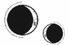

CAPÍTULO 59
Junius 1787
Helena yacía en el suelo. Entornó los ojos, esforzándose por ver algo más, pero todo era un borrón difuso. Cuando intentó respirar, sintió un dolor tan repentino por todo el cuerpo que recobró la consciencia de golpe. Se llevó una mano al pecho e intentó inhalar, pero apenas lo consiguió.
¿Qué había sucedido? No lo recordaba. Intentó respirar mientras escuchaba un silbido agudo que provenía de alguna parte. Entonces lo vio todo en su mente de nuevo: los camiones, el choque y…
Debía de haber estallado otra bomba.
Trató de ponerse en pie.
Quiso ubicar la explosión, pero el paisaje había cambiado por completo. ¿Dónde estaba la carretera? Solo había fuego y un cráter.
Un dolor agónico la atravesó y su visión se tiñó de rojo.
De alguna parte seguía brotando ese silbido, como si fuera una tetera hirviendo. Cuando intentó localizarlo, se dio cuenta de que provenía de su propia garganta.
Se movió con extremo cuidado. Si se había dañado la columna…
«Cálmate. Concéntrate. Evalúa tu estado y actúa en consecuencia».
Se obligó a mirar hacia abajo y un gemido ahogado se le escapó de sus labios.
Tenía un trozo de metal clavado en medio del pecho, justo en el esternón. No consiguió apartar la mirada; estaba demasiado estupefacta para moverse. Iba a morir. Moriría en un hospital de campaña, igual que su padre. Tanta vivemancia…, para acabar sufriendo el mismo destino.
Cerró los ojos e intentó mantener la calma mientras recuperaba la sensación de su propio cuerpo. Sentía los dedos de las manos. También los de los pies. Al menos, no se había dañado la columna.
Intentó respirar, pero lo único que quería era gritar a todo pulmón. El dolor era peor que una puñalada; irradiaba en todas direcciones, extendiéndose como una fractura por las costillas. Le ocupaba el total de su consciencia.
«Levántate. Tienes que levantarte».
A duras penas logró ponerse en marcha. Volvió a mirar hacia la carretera, aunque ya solo era un agujero. Había desaparecido, pero aún quedaba gente en el hospital.
Consiguió levantar la mano y se arrancó la mascarilla. Pensó que ya daría igual si sufría daños por inhalar el polvo.
El aire era mucho más frío. Inspiró un poco.
No podía morir.
Trató de levantarse y respirar de forma superficial, como si jadeara. Estuvo a punto de desmayarse cuando se incorporó. Cada movimiento era una agonía. La necesidad de respirar peleaba con el dolor insoportable que le causaba mover sus costillas y pulmones. Se mordió el labio y comenzó a andar hacia las puertas, paso a paso.
Notaba en los pulmones las ganas de toser, pero se contuvo. Cada vez que lo intentaba, sentía un dolor tan candente y agudo que se tambaleaba y perdía la visión.
Si tosía, se desmayaría, y estaría muerta antes de que recobrara la consciencia.
No iba a morir. Tenía que esperar. Alguien vendría a buscarla. Maier la operaría. Shiseo trabajaría sin descanso para encontrar el quelante apropiado, y se recuperaría en un abrir y cerrar de ojos.
Le había prometido a Kaine que estaría a salvo, que no le pasaría nada. No podía morir.
Atravesó las puertas y encontró una bandeja con instrumental abandonado y unos cuantos frascos. Rebuscó entre ellos hasta dar con uno de láudano. Nada más descorchar el tapón, dio un trago y el líquido le provocó escozor en la lengua.
No obstante, no tomó demasiado, ya que quería mantenerse lúcida. Buscó entre los demás medicamentos algún estimulante que le permitiera seguir avanzando.
En ese momento hubiera matado por un antitusivo.
Se convenció de volver a mirarse el pecho. Llevaba tantas capas de ropa que no consiguió ver exactamente dónde le penetraba la metralla ni si era anulitio que se disolvería en su sangre o un trozo desperdigado del camión.
Ojalá pudiera arrancárselo, pero sabía que no era buena idea. Si le había perforado el corazón o la aorta, se desangraría y moriría en cuestión de segundos. Tal vez ese trozo de metal la estaba manteniendo con vida.
Alguien vendría. Solo debía esperar a que volviese un camión.
Se obligó a seguir caminando, porque le resultaba más fácil que quedarse sentada sintiendo la herida.
Examinó a los pacientes que quedaban. El más cercano era un chico al que le habían quitado ya la armadura. Le faltaba un brazo. Tenía una vía intravenosa en el otro, pero bajo su cuerpo había un charco con demasiada sangre. Con una mano temblorosa, Helena le comprobó el pulso y, al no encontrarlo, le cerró los ojos y buscó más pacientes.
Había más fallecidos, y otros tantos inconscientes; solo unos pocos seguían despiertos. Los examinó a todos y tomó nota de dónde se encontraban.
El láudano le había calmado el dolor hasta el punto de poder moverse con mayor facilidad.
—¿Mamá…? —gimió uno de los soldados, que cogió la muñeca de Helena cuando esta pasó a su lado.
La sanadora sintió una punzada de dolor en el pecho que se extendió hasta la columna y puso fin al alivio. Estuvieron a punto de flaquearle las piernas y se mordió tan fuerte la lengua que saboreó la sangre en la boca.
El soldado tenía el yelmo aplastado contra el cráneo. En la abertura se asomaba su rostro, con una parte magullada. Una sangre espesa brotaba de su cabeza y empapaba el pallet sobre el que estaba tendido.
—Mamá… —repitió.
—Llegará dentro de poco.
No le soltó la muñeca. Volvió a tirar de ella. La visión de Helena se tornó blanca.
—Mamá… Lo siento. Se me olvidó despedirme. Lo siento.
—No pasa nada, n-no te preocupes —lo tranquilizó Helena.
Sintió que sus dedos se relajaban hasta soltarle la mano. Cuando bajó la vista, comprendió que había muerto.
Dio otro sorbo al láudano. Cada vez le costaba más evitar la tos. No sabía si la sangre que tenía en la boca provenía de sus pulmones o de la lengua.
Aguzó el oído para escuchar si se acercaban más camiones. El sonido de la batalla comenzaba a apagarse. Se acercó con esfuerzo a las puertas.
Conforme pasaban los minutos, estaba más convencida de que su herida era demasiado grave para los medios de los que disponía la Resistencia. Los huesos partidos y la posible perforación en el corazón requeriría una cirugía manual muy precisa que Maier no sería capaz de realizar sin alquimia. Probablemente, también tuviera un pulmón perforado. Necesitaría al menos dos cirujanos, quizá tres.
Si habían activado el protocolo de emergencia que solía aplicarse cuando había heridos en masa, nadie excepto Luc o Sebastian era lo bastante importante como para prescindir de tres cirujanos.
Apoyó la cabeza en la pared.
Incluso si la operaban y todo salía bien, sus probabilidades de vivir eran escasas. Correría un grave riesgo de complicaciones e infección que agotaría los ya limitados suministros. El hospital salvaría a más personas si la dejaban morir. Cualquier análisis médico lo confirmaría.
Independientemente de si llegaban los camiones o no, Helena iba a morir. Miró su mano y deseó tener resonancia para enviar un mensaje pulsado a Kaine, para decirle de algún modo que lo sentía, que lo había intentado.
La visión se le nubló; los bordes comenzaron a difuminarse, como una tela que se encoge lentamente.
Cuando parpadeó, vio a alguien delante de ella. Su mente se tambaleó entre la neblina de dolor hasta que cayó en la cuenta de que se trataba de un necrómata. La miraba con confusión, como si no tuviera claro si estaba viva o muerta.
Notó un espasmo en los pulmones, unas ganas violentas de toser, de expulsar el fluido que inundaba su pecho. Se le escapó un gemido rasgado al intentar contenerlas.
Por el rabillo del ojo percibió movimiento. Había más necrómatas. El sonido de la batalla había cesado. Althorne y sus hombres habían muerto o se habían retirado. Los necrómatas venían al hospital a por los muertos y los supervivientes.
No podía permitir que se llevaran a los supervivientes.
Dio un paso atrás y buscó un bisturí, algo afilado, un instrumento que causara una muerte rápida e indolora. No permitiría que los llevaran al puerto Oeste. Pero solo encontró vendas sucias y frascos vacíos de medicamentos. Necesitaba un bisturí.
Sintió un bulto bajo su ropa. Tardó un instante en recordar qué guardaba en el bolsillo: la obsidiana. La tenía en la mano cuando estalló la bomba y se la habría escondido sin pensar.
Al intentar sacarla, se hizo un corte en el dedo. El fragmento debía de haberse roto en la explosión, pero aún estaba afilado.
Helena iba demasiado lenta. Los necrómatas ya estaban dentro. Había cadáveres junto a la puerta, y algunos necrómatas los apartaban a rastras, pero el resto se adentró en el hospital.
No se movían muy deprisa, pero eran más rápidos que Helena. Alcanzaron a los supervivientes antes que ella.
—¡No! —chilló con una voz rasgada que resonó en su pecho.
Uno de los necrómatas se dirigió hacia Helena, y ella trató de defenderse. Lo único que tenía a mano era la obsidiana. Atacó al necrómata con ella. Su piel suave y en descomposición se rasgó con facilidad y la punta del arma tocó hueso.
Aunque apenas había empleado la fuerza, el movimiento le provocó tanto dolor que le fallaron las piernas. Cuando se le despejó la mente, estaba en el suelo…, al igual que el necrómata.
Sus dedos, cubiertos de sangre, sostenían la obsidiana, cuyos bordes se clavaban en su piel. Aún quedaban muchos otros necrómatas.
Se le echaron encima y sus cuerpos taparon la luz rojiza que se colaba por la puerta. Helena sintió el viento en la cara.
Cerró los ojos.
Cuando quiso abrir los ojos de nuevo, los párpados le pesaban, como si las pestañas se le hubieran enredado. Intentó moverse, pero su cuerpo no respondió.
Abrió los ojos de par de par. Había una luz tan deslumbrante que la cegaba y todo lo demás se veía borroso y distorsionado a su alrededor. Se removió en el sitio y entrecerró los ojos.
Kaine estaba a su lado, pálido y con los ojos desencajados; su rostro parecía más demacrado que nunca.
—Tú…
La palabra sonó como un crujido extraño. Notaba la lengua seca y pastosa, como si no hubiese bebido agua en días. No sentía nada del cuello para abajo. Intentó bajar la vista, pero no podía moverse.
Estaba paralizada.
Intentó ver su propio cuerpo, pero lo único que distinguió fue una vía intravenosa en su brazo. Al forzar la vista, vio los frascos suspendidos de suero y otros medicamentos, que volcaban su contenido en la sonda.
—¿Cómo? —preguntó, con la voz quebrada y atascada en su garganta—. ¿Qué has hecho…?
—¿Qué he hecho? —repitió Kaine con calma—. Te he salvado la vida. —Estaba respirando entrecortadamente—. Gracias a las innumerables exigencias de Crowther, el Sumo Nigromante ha tomado una miríada de medidas de precaución. Solo tres personas sabían lo de la bomba antes de que estallara. Y yo no era una de ellas. Cuando me enteré y envié a mis necrómatas, pensé que estaba comportándome como un paranoico. Seguro que entienden que no puedo frenar todas las putas estrategias. Lo hacía por mi bienestar mental, me dije a mí mismo. Para ver lo que había sucedido y saber lo mal que estaban las cosas. Tú no estarías allí, por supuesto. Me dije a mí mismo que no estarías allí, que estarías a salvo en el Cuartel General, porque ese era el trato que habíamos hecho, joder. ¿No fue eso lo que prometiste? ¿Que no te castigarían? Lo sabía… Te dije que esto pasaría…
Se le rompió la voz.
—No fue… Crowther… —Al menos, hablar le humedecía la lengua, pero se moría por un trago de agua. Aún notaba la mente torpe. No entendía cómo había llegado allí.
—¡No los defiendas! —Kaine estaba lívido de rabia—. ¿Te haces una idea de lo cerca que has estado de morir? He tenido que contratar a todo un equipo médico para mantenerte con vida. Si no pretendían matarte, ¿por qué te dejaron sola en ese puto hospital?
—Estábamos… evacuando —respondió Helena poco a poco; su lengua empezaba a obedecer.
—¿Tú sola?
—Yo estaba… al mando. —Sorprendentemente, sintió que recobraba la lucidez—. Los soldados… no se merecían morir solos.
Intentó incorporarse. Creía que sería capaz de pensar con más claridad si podía sentarse un momento para procesar lo que le había sucedido.
—Pues yo no vi a nadie allí mientras tú morías.
No sabía por qué trataba de razonar con él, pero quería tranquilizarlo para poder reorientarse ella misma.
—Estamos en guerra, Kaine. La gente muere. Teniendo en cuenta las muertes que tú has provocado, deberías saberlo mejor que nadie. Sabes que no voy a priorizar mi vida por encima de la de los demás.
La miró fijamente durante unos interminables segundos; su rostro delataba la furia que sentía.
—Pues deberías. —De repente, su voz adquirió un tono gélido y sus ojos brillaron con un plateado que era casi blanco—. Te lo he advertido. Si te pasa algo malo, me encargaré personalmente de reducir la Llama Eterna a cenizas. Y es una promesa, no una amenaza. Ten en cuenta que tu supervivencia es tan indispensable como la de Holdfast. Si tú mueres, mataré a todos los miembros de la Resistencia. Es evidente que ver peligrar sus vidas es lo único que hace que valores la tuya propia.
Helena lo contempló completamente anonadada, aunque ese sentimiento no tardó en convertirse en pura rabia.
—¿Cómo te atreves? ¡Cómo te… atreves! —Había subido tanto el tono que la voz se le quebró.
Si hubiera podido moverse, se habría abalanzado sobre él para darle una paliza con sus propias manos. Quería gritarle.
Sin embargo, más allá de esa rabia, un horror profundo se instaló en ella por todo lo que aquello implicaba. Kaine se había convertido en la amenaza que Crowther siempre temió. En el pasado se había mostrado leal para vengar a su madre, pero Helena ocupaba ahora su lugar, y eso había desatado en él una obsesión y una rabia incontrolables.
Helena cerró los ojos, incapaz de mirarlo a la cara, y en su mente apareció el uróboro como una imagen de autodestrucción infinita: un dragón que se devoraba a sí mismo eternamente.
Se le escapó un sollozo casi roto que le sacudió los pulmones violentamente. Intentó respirar para calmarse y que la habitación dejara de darle vueltas.
La superficie bajo su cuerpo se hundió. Unos dedos metieron un mechón de pelo suelto por detrás de su oreja y le acariciaron la mejilla.
—Conozco tu expresión como la palma de mi mano —suspiró—. Estás pensando que ahora tendrás que matarme, ¿verdad? Que soy una carga demasiado pesada.
Helena no dijo nada y se negó a abrir los ojos.
—¿De verdad lo harías? —Lo miró fijamente—. Ya sabes que… sabes que yo no te elegiría por encima de todos los demás. Sabes lo que pasará si la Resistencia pierde. No puedo elegirte. Ni tampoco te salvaría si lo hiciera.
Entonces Kaine apartó la mirada.
—Y jamás te lo perdonarías.
A ella le tembló la barbilla.
—No, lo cierto es que no… —Se le formó un nudo en la garganta. Le costaba tragar y no podía levantar la cabeza—. Pero no sería lo primero que soy incapaz de perdonarme. ¿Qué más da otra línea en los libros de historia?
Kaine guardó silencio durante un buen rato.
—¿Qué harás cuando yo ya no esté? —le preguntó, como si eso fuera lo único que importase.
—Seguro que te haces una idea.
El techo se distorsionó al imaginar un mundo en el que Kaine ya no estuviera y ella estuviera sola, sin nadie más que ella misma a quien culpar.
Detestaba la guerra. Al principio, pensaba que podría con todo, que era lo suficientemente fuerte, que no habría límite que no estuviera dispuesta a cruzar o soportar. Por lo visto, Kaine se había convertido en ese límite.
No podía imaginar su vida sin él. No creía que pudiese seguir existiendo.
Se le escapó un sollozo estrangulado y sus pulmones se encogieron en busca de oxígeno.
De repente, Kaine estaba sobre ella, sujetándole la cara entre las manos, ladeando su cabeza para que pudiera respirar mejor. Ese era el único abrazo que podía ofrecerle.
—Solo quiero que vivas, Helena. —Le temblaba la voz—. Es lo único que te pido.
Helena soltó un sollozo más grave y oyó cómo le silbaban los pulmones al intentar tomar aire.
—No puedo prometerte eso. Sabes que no puedo. Pero tampoco puedo arriesgarme a que cumplas lo que quieres hacer si muero.
Kaine la besó y ella sintió la súplica en sus labios.
—Lo siento —repitió Helena una, y otra, y otra vez—. Siento haberte hecho esto.
Sonó una fuerte vibración. Kaine se puso en tensión y se alejó mascullando una maldición. Se produjo otra vibración. Dos largas y dos cortas. Cada vez que se oía, la iluminación parpadeaba como un mal presagio.
Kaine miró a su alrededor con los dientes apretados.
—Mierda. Quieren que vuelva a la ciudad. —Dio un paso hacia atrás sin apartar la vista de Helena. Había cálculo en sus ojos, como si estuviera sopesando distintas opciones, aunque finalmente lo que se abrió paso por su rostro fue una expresión desesperada—. Davies, ven aquí —ordenó en voz baja, y sus ojos se desenfocaron durante un instante.
Se abrió la puerta que había detrás de él y entró una mujer. Helena no sabía lo suficiente sobre uniformes del servicio para saber su rango, pero sí reconoció su nombre.
La doncella de Enid Ferron se colocó junto a Kaine y observó a Helena con unos ojos azules y vidriosos. La habitación se inundó de un olor leve, seco pero orgánico. Estaba muerta, pero la habían reanimado con tanta destreza que parecía viva.
Helena miró a su alrededor y luego hacia la ventana. Entonces reparó en que no veía ningún edificio, solo cielo y árboles.
—¿Dónde estamos? —preguntó de repente. Ni siquiera sabía cuánto tiempo llevaba inconsciente.
—En Puntaférreo. La finca familiar de los Ferron —contestó Kaine mientras se ponía el uniforme de abrigo y la capa negra—. Ya te lo explicaré más tarde. Tengo que irme. No temas a Davies. No te hará daño.
Helena observó a la necrómata. Era una de las criadas que habían muerto para que Kaine se convirtiera en inmarcesible, por lo que había dado su vida para que él alcanzara la inmortalidad. ¿La habría reanimado él?
—Lo siento —siguió diciendo—. Pensé que tendría más tiempo para explicaciones. Aquí estarás a salvo. Nadie podrá encontrarte. Volveré tan pronto como me sea posible. Davies, cuídala. —Se inclinó sobre Helena una última vez y le acarició el cabello—. Estás a salvo. Te lo prometo.
Y, sin más, se marchó. Helena oyó un chasquido en las paredes y el suelo, como si algo se moviera, aunque no pudo ver nada. Estaba inmovilizada en manos de una necrómata.
La volvió a mirar. Davies estaba ahí de pie, observándola con una mirada perdida pero imperturbable.
—¿Me das un poco de agua? —preguntó Helena al cabo de un rato.
Davies sirvió un vaso de agua de una jarra que había sobre la mesa y se lo acercó a Helena. Luego la ayudó a beber, aunque solo fuera para mojarse los labios. Estaba amarga, y ella reconoció al instante el sabor del láudano.
No tenía ni idea de que se podía reanimar a necrómatas hasta este punto. Esa mujer parecía viva de verdad.
—Eras la doncella de Enid Ferron, ¿verdad? —preguntó Helena, que luchaba contra el cansancio que el medicamento le estaba provocando.
Davies asintió lentamente, como si comprendiera la pregunta. Helena notó que le costaba enfocar la vista.
—¿Has estado aquí todo este tiempo?
Otro asentimiento. Davies vocalizó una palabra en silencio. «Kaine».
Si era cierto, significaba que la había reanimado hacía casi siete años, pero no mostraba ningún signo de putrefacción. Helena no comprendía cómo podía ser aquello posible.
—¿Por qué? ¿Por qué te haría algo así?
Si la necrómata respondió, Helena ya no estaba consciente para escucharlo.
Perdía y recuperaba la lucidez de forma intermitente y, cada vez que despertaba, el dolor era más profundo. Davies estaba sentada en una silla a su lado, tejiendo lo que parecían unos calcetines. El entumecimiento empezó a desvanecerse. El dolor pasó de ser una impresión distante a una carga que le pesaba cada vez más.
Sentía la garganta hinchada y en carne viva por dentro, como si hubiera tenido un tubo respiratorio en algún momento.
Cuando el dolor se convirtió en tan insoportable que la despertó por completo, descubrió que Kaine había regresado. Estaba de pie a su lado y cambiaba algunos de los frascos que se vertían en la vía intravenosa.
—¿Qué le ha pasado al equipo médico? —preguntó Helena, que volvía a tener la lengua pastosa y seca—. Las personas que me salvaron la vida. ¿Qué les has hecho?
Kaine la miró. La habitación estaba a oscuras y el uniforme negro hacía que se camuflara entre las sombras. Aun así, su cabello rubio y sus ojos brillaban en la oscuridad.
—No hagas preguntas para las que no quieres respuesta.
—¿Los has matado? —Se le agudizó la voz.
El chico encendió un interruptor y toda la habitación se iluminó con un naranja tenue.
—No, no los he matado. Que todo un equipo médico aparezca muerto habría despertado sospechas. Creen que salvaron a una mujer que murió ayer en un interrogatorio. Y les da igual haberse pasado horas salvándote para que al final alguien acabara torturándote hasta la muerte. Están orgullosos de haber servido a la causa. Después de todo, eres una terrorista. Ellos mismos me lo dijeron.
Helena sabía que estaba intentando distraerla.
—Entonces quieres decir que los habrías matado pero no lo hiciste porque sus muertes hubieran despertado preguntas incómodas.
La rabia iluminó los ojos de Kaine.
—Sí, todo esto lo hago por comodidad. Ya sabes que tengo dos amos que me exigen exclusividad.
La culpa hizo que a Helena se le formara un nudo en la garganta.
—No quiero que mates a nadie por mí.
A Kaine se le escapó una carcajada.
—¿Qué es lo que crees que hago todos los días? Mato a gente. Ordeno a otros que maten a gente. Entreno a personas para que maten a gente. Saboteo y socavo a personas que acaban muertas, y todo lo hago por ti. Cada palabra, cada vida. Todo ha sido por ti.
La habitación empezó a darle vueltas, y se le escapó un grito ahogado. Sintió que flotaba, como si la sangre abandonara su cabeza.
La crueldad del semblante de Kaine se desvaneció de golpe.
—Espera, Helena, no pretendía…
—No —lo interrumpió con dureza—. No te atrevas a retirarlo.
—Yo… —Su voz se tornó suave, suplicante.
—No —repitió la chica—. Es cierto. Lo que dices es la pura verdad. Todo lo que haces también es culpa mía. Cada vida…
—Para. —Se sentó al borde de la cama y le sostuvo la mano derecha—. No sigas por ahí. No es culpa tuya. Deja de llevar sobre tus hombros la carga de toda esta condenada guerra.
—Pero esto sí que es culpa mía —repuso—. Yo te hice esto. Yo te convertí en lo que eres. Alguien debería arrepentirse de ello, y tú no puedes. Pero, si lo hago yo…, tal vez eso baste para que algún día dejes de hacerlo.
Kaine apartó la mirada y no respondió. Helena observó cómo le acariciaba los dedos y deseó poder sentirlo.
—¿Qué está pasando en la ciudad? —preguntó.
El chico estuvo callado durante unos segundos.
—Althorne ha muerto. Había varias unidades atrapadas bajo uno de los edificios; consiguieron sacarlos a todos, pero el general murió en la retirada. Según nuestras estimaciones, la Resistencia ha perdido al menos a la mitad de su ejército activo. Retomamos los puertos hace dos días.
No había lugar en su cuerpo que pudiera ya soportar la desesperación que le causó esa información, excepto sentirla como una lanza en la cabeza. No notó un horror que le retorciera las entrañas, no hubo sensación de vacío. No sentía su propio cuerpo, así que solo le quedaba pensar.
—Aun así, ha habido muchas consecuencias después del bombardeo. No imaginaron que el polvo acabaría contaminando las dos islas. La gente ha sucumbido al pánico y a la rabia por haber perdido la resonancia, y los hospitales están llenos de pacientes que necesitan agentes quelantes. Aunque la Resistencia ha sufrido unas bajas considerables, apenas hemos recuperado cuerpos para convertirlos en necrómatas, porque Durant olvidó mencionar que el compuesto anulador interferiría con la reanimación. Tienen que bombear sangre fresca en los cadáveres para poder reanimarlos, así que dudo que vuelva a pasar. Al menos, no a esa escala.
Un consuelo nimio, pero era algo al fin y al cabo.
—No sé qué hacer —expresó Helena al cabo de un rato—. No puedo ignorar una amenaza a la Llama Eterna.
Kaine suspiró y bajó la cabeza.
—Solo estaba enfadado.
—Siempre estás enfadado, pero no puedes soltar ese tipo de amenazas o reducir una guerra a un simple juego de reparto de culpas. Y no puedes tener a la Resistencia de rehén para controlarme.
Kaine bajó los hombros.
—Helena, si mueres, se acabó. No seguiré con esto. Estoy cansado.
Cuando la miró, vio todo el peso de la guerra en sus ojos, la carga que suponía luchar sin ver el final, impulsado únicamente por el miedo de lo que podría pasar si dejaba de cumplir órdenes.
—Lo digo en serio. No los mataré…, pero no volveré a trabajar para ellos. Tú eres mi única condición. Si mueres, el contrato será papel mojado.
Helena consiguió ladear un poco la cabeza.
—Hay vida para ti más allá de esta guerra. Tienes la gema. Si Morrough muere, tal vez sigas con vida y serás libre. Podrías hacer… cualquier cosa. No reduzcas tu mundo a mí.
Kaine hizo un gesto que dejó los dientes a la vista.
—Ah, ¿tú tienes una lista de cosas que hacer después de la guerra y no la has mencionado?
La chica esquivó su mirada.
—Haz lo que te digo, no lo que hago.
Kaine entrelazó los dedos con los suyos y se sumieron en un silencio tan vacío como su futuro.
—Podrías… ser sanador —dijo Helena al cabo de unos instantes. Se estiró para sentir el tacto de su mano contra la suya. El atisbo de una sonrisa asomó a las comisuras de la boca de Kaine.
—No me lo había planteado.
—Pues tienes… Tienes un talento natural… Aunque el trato con el paciente deja mucho que desear.
—Así podría compensar las muertes que llevo a cuestas —replicó sin mirarla a los ojos.
—No debería haber dicho nada. No es culpa tuya.
Kaine sacudió la cabeza y se quedó mirando la pared.
—Puede que eso fuera cierto en el pasado, pero creo que ahora debo asumir la responsabilidad.
Helena tragó saliva. Deseó poder mover los dedos para apretarle la mano.
—Eres mucho más de lo que esta guerra ha hecho contigo. —Lo dijo tan convencida que le tembló la voz, pero Kaine siguió sin mirarla—. Lo digo en serio —repitió con desesperación—. Igual… igual que yo. Somos mucho más… y esa parte aún está ahí, deseando salir. Algún día, dejaremos todo esto atrás. Nos iremos lejos, ya lo verás. Los dos solos… Creo que podremos hacerlo.
Kaine no respondió, pero Helena sintió que le apretaba levemente los dedos.
—Te lo prometo… Ya lo verás… —Empezaron a cerrársele los ojos.
—Duerme. Te queda una larga recuperación por delante.
Helena se resistió y trató de permanecer despierta.
—¿Cuánto tiempo llevo aquí?
—No te preocupes por eso.
—¿Cuánto?
—Han pasado cuatro días desde el bombardeo.
¿Cuatro días? De repente, sintió que el corazón le retumbaba en los oídos y que le dolían los pulmones al intentar respirar.
—Kaine… Tienes que avisar a Crowther de que sigo viva.
—No te preocupes por ellos —dijo con voz grave.
—No, escúchame. Debes decírselo.
Kaine le acarició la mejilla.
—Descansa.
Helena intentó moverse; tenía que hacerle entrar en razón.
—No, prométemelo. Prométeme que lo avisarás. Que te asegurarás de que sepa que voy a volver.
Si Crowther pensaba que estaba muerta, tal vez decidiera que Kaine era un riesgo demasiado alto como para mantenerlo con vida.
—Prométemelo… Prométeme que lo avisarás…
—Está bien. Lo avisaré, lo prometo. Ahora descansa.
Notó cómo se calmaba el bombeo de sangre en su cabeza y se relajó. Kaine le colocó un mechón de pelo detrás de la oreja.
—Vas a estar aquí al menos tres semanas, hasta que no haya restos de anulitio en tu sangre.
—La Llama Eterna ha desarrollado un quelante…
Le dio un toquecito en la nariz.
—Los inmarcesibles tienen quimiatras y conocen perfectamente los agentes quelantes del metal.
Helena puso los ojos en blanco.
—Recuperarás tu resonancia, pero tardarás bastante en recuperarte. Has sufrido varias heridas de metralla y has inhalado una cantidad importante de anulitio. No sé decirte cuánto tardarás en recomponerte. Tendrás que recuperarte con calma, mediante el descanso. Duerme. Por mucho que deteste admitirlo, la guerra seguirá aquí cuando despiertes.